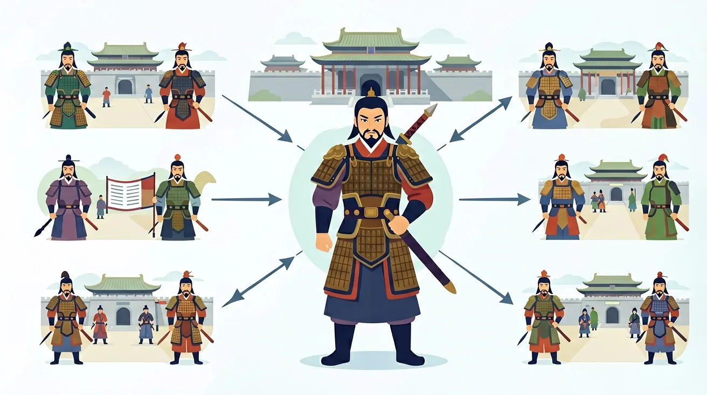

先独立作答，再点选项查看对错与错因。
下列哪项最能体现秦朝中央集权的特点？
汉武帝为加强中央集权，采取了哪项措施？
下列哪项是秦汉两朝的共同特点？
秦始皇统一中国后，为加强统治，推行了____、____、____三大政策。
答案：统一文字、统一货币、统一度量衡
这三大政策有利于加强中央集权
汉武帝时期，为加强中央集权，在地方推行____制度。
答案：刺史
刺史制度加强了中央对地方的监督
下列哪项最能体现'大一统'的特点？
比较秦朝和汉朝的政治制度，分析它们如何巩固大一统国家
1. 错误认为秦朝"书同文"是强制废除六国文字。学生在看到秦统一文字政策时，常误以为秦始皇下令全面废除六国原有文字。这种误解源于对"书同文"政策执行过程缺乏了解。实际上，秦朝以小篆为标准字体，但并未立即废止其他文字，而是通过官方文书和教育系统逐步推行。考古发现的里耶秦简显示，直到秦末，地方仍存在隶书与六国文字混用现象。
2. 混淆"削藩"与"推恩令"的时间顺序。学生常将汉武帝的"推恩令"（前127年）与汉景帝"削藩"（前154年七国之乱前）颠倒。这种错误源于对西汉中央集权政策演变过程不清晰。景帝采用晁错激烈削藩引发叛乱，而武帝则用主父偃建议的"推恩令"，通过分割诸侯领地实现渐进式削弱，两者相隔27年，是不同阶段的策略。
3. 高估秦末农民起义规模。受文学作品影响，学生往往认为陈胜吴广起义有数十万规模。实际上根据《史记》记载，大泽乡起义初期仅900戍卒，攻占陈县后发展到"车六七百乘，骑千余"，总兵力约3万人。这种夸张认知源于对"伐无道，诛暴秦"口号的文学想象，忽略了秦末起义军多为分散的地方武装这一史实。
1. 现代高速公路网与秦驰道系统的对比研究。交通工程师分析秦朝"驰道"的标准化设计（道宽50步约69米，路基分层夯筑）时，发现其与当代高速公路的中央分隔带、排水系统等原理相似。2021年陕西考古发现的秦直道遗迹，为现代道路耐久性研究提供了2000多年前的工程样本。
2. 大数据时代的文字统一挑战。如同秦朝面对六国文字差异，当今Unicode编码联盟需要处理全球文字数字化问题。微信在2015年推出方言语音转文字功能时，就面临类似秦汉"书同文"的标准化难题。目前Unicode已收录14万字符，远超秦朝小篆的3300字。
3. "郡县制"在企业管理中的应用。海尔集团2014年推行的"人单合一"模式，将8万员工划分为2000个自主经营体，这种分权与集权平衡的管理架构，与汉代郡国并行制有相通之处。京东物流的"区域仓-前置仓"体系，也借鉴了汉代郡县二级行政的物资调配逻辑。
1. 问题：秦统一后为何坚持严刑峻法？从商鞅变法到秦亡，法家思想为何未能自我调整？思考线索：比较《睡虎地秦简》与《张家山汉简》中的律令差异，注意秦朝"刑徒占人口5%"的特殊背景（据推算约150万刑徒），同时考虑战国军事动员体制与和平时期治理需求的矛盾。
2. 问题：汉武帝"独尊儒术"真是要废除其他学派吗？观察太学设立（前124年）与盐铁会议（前81年）的时间差，注意《汉书》记载的"博士官"中仍有阴阳家、法家学者。从"春秋决狱"的实际操作看，这种"儒表法里"的统治术如何平衡理想与现实？
先看秦统一的制度奠基：前230-221年十年灭六国后，始皇帝立即推行"一法度衡石丈尺"的标准化改革，将商鞅方升（现存上海博物馆）的容积精确到202毫升，全国修建驰道相当今天高速公路的雏形。接着面临统治难题，严苛法律（仅盗采桑叶就罚徭役30天）与焚书坑儒（前213年坑杀460余人）激化矛盾，导致陈胜吴广因大雨失期（按秦律当斩）而起义，这是中国历史上首次平民起义。
汉承秦制但有所调整，刘邦初期被迫分封七异姓王，到文帝时贾谊已提出"众建诸侯而少其力"。景帝削藩引发七国之乱（吴楚联军20万），暴露激进改革的危险。武帝时期通过"推恩令"（前127年）巧妙分化诸侯，配合盐铁专卖（年收入相当全国田租半数的财政改革）加强中央集权。董仲舒改造儒家学说，将阴阳五行融入政治理论，太学设立五年后博士弟子从50人增至3000人，形成"以经取士"的选拔机制。
最后观察制度遗产，秦汉创建的郡县制延续至今，当前中国行政区划仍可见郡（省）、县两级影子。书同文政策使得汉语方言差异虽大于欧洲语言差异却保持文字统一，这与欧盟24种官方文字形成鲜明对比。度量衡统一的影响更深远，当今1尺仍约合秦制23.1厘米，这种制度惯性证明秦汉大一统奠定中华文明连续发展的基础框架。
❓ 秦始皇为啥非要统一文字和货币？
❓ 汉朝为啥能比秦朝存在更久？
❓ 书上说'书同文'很重要，可我们方言不一样不也活得好好的吗？
学完这一课，这些问题你都能自信地回答。
你已经学过春秋战国，具备继续探索的底座；在日常生活中，你也早就接触过与「秦汉大一统」相关的现象。
但当问题换了一个情境出现——需要你解释原因、做出判断或解决实际任务时，仅凭零散的旧知识就很容易卡住。
所以本课用一个贯穿的情境任务，带你把「秦汉大一统」拆成可操作的步骤：先看懂它，再动手试，最后用练习和迁移把它变成自己的能力。
🎯 能说出秦朝建立中央集权制度的3项措施
🎯 能分析汉武帝'推恩令'对巩固统一的作用
🎯 能判断秦汉时期经济文化统一的具体表现
✅ 汉代董仲舒改造儒家思想成为正统
💡 混淆短期压制与长期文化融合
✅ 实为分化诸侯力量的削藩策略
💡 未理解'众建诸侯而少其力'的本质
口诀：三统一（文字钱币度量衡），两制度（郡县推恩中央权）
类比：像拼乐高：分散零件（战国）→统一图纸（秦）→加固连接（汉）
秦朝统一后最可能遇到什么治理难题？
下列哪项不是汉武帝的巩固统一措施？
（中考真题）《里耶秦简》记载'迁陵以邮行洞庭'，说明秦朝（ ）
（迁移题）现代'全国医保联网'与秦汉哪项措施逻辑最相似？
（辨析题）有人说'秦法严苛导致速亡，说明法治不如德治'，最合理的反驳是（ ）
